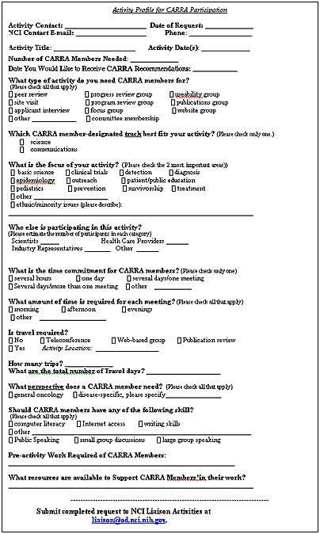
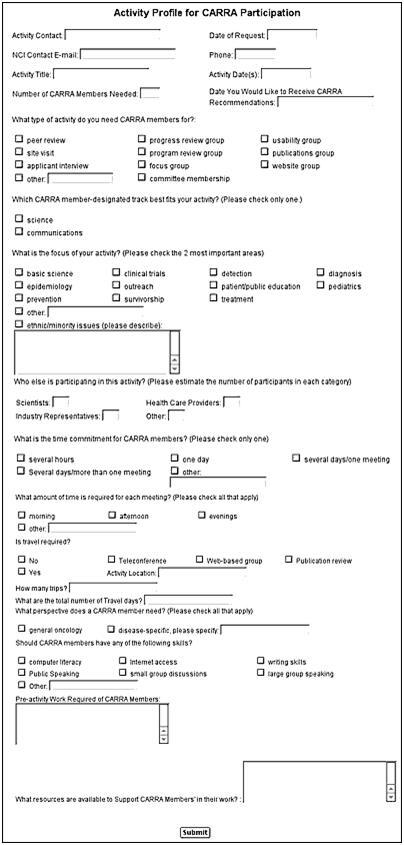
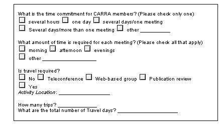
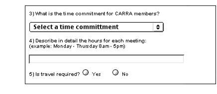
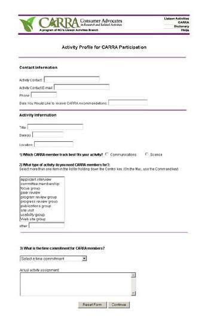
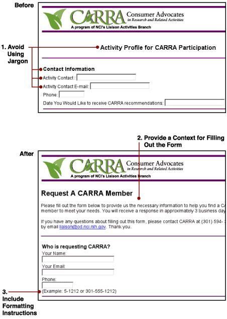
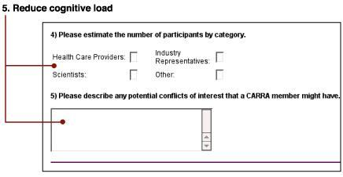

Creating an online form can present developers with many challenges. This case study reviews how a paper-based form was taken through the usability engineering process to develop a functional online version. We discuss the steps in planning and research, prototype development, test design, and the usability test results.
Consumer Advocates in Research and Related Activities (CARRA)
The National Cancer Institute (NCI) developed the Consumer Advocates in Research and Related Activities (CARRA) program to increase the involvement of people affected by cancer in NCI activities. A Web site was built to educate CARRA members about their roles and responsibilities. One of the features of the site was to provide a method for NCI staff members to request consumer advocates for participation in their research activities. An online form was developed for this purpose.
Initial Paper Prototype
Lessons Learned
1. A form that works on paper may not necessarily work online. Determine the goal(s) of the form and what information needs to be collected up front before the form is designed.
We were given an existing paper-based form that was designed to serve as a direct interface to an internal database. The fields on the paper form were matched to the fields in the database. The goal was to automate the CARRA member selection process, by putting the paper form on the Web and linking it to the database.
We took the existing paper prototype & created an online version which mirrored the paper format exactly. It was extremely difficult to replicate the paper version of the form online in HTML and still be usable. The overall layout and design looked too dense, and we quickly realized that the form couldn't go online in its current state, and needed usability engineering.
We then clarified what information the client needed to collect in order to fulfill a user's request:
- Contact information for the person requesting an advocate
- Information about the activity they need an advocate for
- How much time they need an advocate for, and
- What type of personal characteristics, skills, and background they are looking for in an advocate
Paper Prototype

Original HTML mock-up

2. Don't ask for the same information more than once; collect only information that you are going to use.
The original paper-based form had a number of questions that were duplicative. We eliminated the ones that were unnecessary to avoid having users re-enter the same information in different ways.
Original Questions

Revised Questions

3. Provide a logical structure.
We then decided to review current research on effective form design, as well as look at other forms on the Web to determine how they were being used to collect information, and what aspects of existing forms online would fit our needs. We paid close attention to the style, organization, layout, field labels, use of widgets, and other elements integral to form design.
Our existing paper prototype was then revised based on the information gained from our review. We applied a mental model of how a typical user might approach the form to create a more logical structure. We divided the form into three distinct sections, and placed related fields under these section headings to fit the model:
- Contact Information - which included information such as name, email, phone #
- Activity Information - where users could provide information about the activity they needed an advocate for
- CARRA Member Profile - where users could provide information about the specific characteristics, skills, and requirements of the advocate
4. Use appropriate form elements (widgets) for the type of question you're asking.
We went through each question and field on the form to determine the most appropriate widget to use. The goal was to minimize user workload by maintaining consistency among widget types. Our design decisions were based on the following guidelines:
| Form Element | Type of Question |
|---|---|
| Radio Buttons | Simple question where only one choice can be made, and choices are mutually exclusive |
| Drop-down Box | There are multiple options, but users can only choose one |
| Check Boxes or Open-list Box | There are multiple options, and users can make more than one choice |
| Text Box | Open-ended question where users can type in the answer |
First iteration after usability engineering

Designing the Usability Test
Lessons Learned
1. Identify problem areas on the form and anticipate usability issues to test.
Before the online form was developed, NCI staff had to request CARRA members by filling out the original paper version of the form. We first looked at samples of completed forms to determine where users had been making errors. Being able to see where some of the problems already existed helped us shape the design of the test.
2. Determine the characteristics of your users and develop user profiles.
We determined that there would be two different types of users; those who have a science background, and those who work in health communications. We began writing scenarios for each of the user profiles by looking at the questions on the form, and trying to determine, field by field, what was essential information that needed to be provided in the scenario, and what can be inferred by the user within the context of the scenario.
Original Scenario
You have an upcoming site visit review for a cancer center. It will be held on May 14-16, 2002 at the City of Hope Cancer Institute in Duarte, CA."
Ultimately, we interviewed one participant of each of the user types and developed scenarios that reflected the way they approached an activity, which was quite different than the linear approach we were going to take.
Revised Scenario
"You have an upcoming RFA grant review meeting in which you'll need two consumer advocates to participate in. You would like the CARRA members to have the following characteristics."
During testing, participants were asked if they had ever requested a CARRA member for one of their research activities. If they had, users were then instructed to fill out the form as if they were requesting one for that activity and told to make up any information if they forgot certain details related to it. A "science" or a "communications" activity scenario was provided if users had never requested a CARRA member (to match the user profiles). All participants had used CARRA in the past and filled out the form without the use of the scenarios. This reflected more of a "real-world" situation for users.
3. The testing protocol for an online form differs from traditional scenario-based tasks.
A performance-based usability test was employed using a think aloud protocol. Several techniques were used to solicit participant feedback during this test. Participants were asked to fill out the prototype of the form online. They were asked to describe out loud how they were attempting to complete each field as they worked on them. After they completed filling out the form, the test facilitator performed a critical-incident analysis by following up on the participants' actions/comments and asking questions to clarify comments made or to encourage the participant to continue describing his/her actions. Observers took notes of user comments and actions during test performance. All tests were video recorded. Finally, participants answered seven general questions about their overall impressions of the form. Each test was approximately 1 hour
Usability Test Results
1. Avoid using jargon; use clear, simple language for all field labels and questions.
Users were confused by some of the terminology that was being used, such as the title of the form (Activity Profile for CARRA Participation), section headings (Contact Information, Activity Information, CARRA Member Profile), and other fields throughout the form (Activity Contact, Activity Contact E-mail). See image below.
2. Provide a context for filling out the form.
Users wanted a context as to why they were filling out the form and when they would receive a response. They also wanted to be able to contact CARRA if they needed to follow up on their request. This information was added at the top of the form. See image below.
3. Include field formatting instructions, if necessary. Users weren't sure if they should put their internal office phone extensions, or full phone number. See image below.

4. Ensure form elements (widgets) can actually be used.
Users had difficulty selecting more than one option in the open-list boxes; some text boxes didn't have enough space for users to enter the information they wanted to. See image below.
5. Ensure all questions are worded clearly.
Questions that are vague or not written clearly will cause confusion and users won't know how to answer them. One field, "ethnic/minority issues (please describe)" was for users to indicate if they wanted CARRA members of a certain race or ethnicity.
Users weren't sure what "ethnic/minority issues" meant, and as a result, put a range of incorrect responses (i.e. "recruit CARRA members who are ethnically diverse; ensure minorities are recruited for clinical trials, target communities with health disparities). See image below.
6. Reduce cognitive load in a form; don't make users think (humans don't think like a database).
Overall, users had difficulty trying to match the information about their activities, as well as what they were looking for in a CARRA member with the predetermined categories and fields on the form. It took more time for users to translate what they knew in their heads to fit. See image below.

Conclusion
Overall, users experienced general frustration while filling out the Activity Profile form. It did not meet their expectations.
This form was initially designed for multiple purposes and audiences:
- Assist Liaison Activities Branch with tracking the CARRA program
- Serve as a confirmation record for CARRA members participating in an activity
- For NCI staff to request a CARRA member
This test demonstrated many of the problems associated with taking a tracking form that is defined by an internal database, and using it to serve a purpose for which it was not originally intended. By conducting this usability test, we discovered that the form did not meet users' expectations. The form was modified by providing text boxes where users could enter an open-ended, narrative text description of their activity and the characteristics they are looking for in a CARRA member. Further testing on the redesigned form should be conducted to reevaluate these changes.
For More Information
- Information about the CARRA program: http://ncccp.cancer.gov/files/launch/binder_doc46.pdf.
-
Information on forms design: http://www.formsthatwork.com/